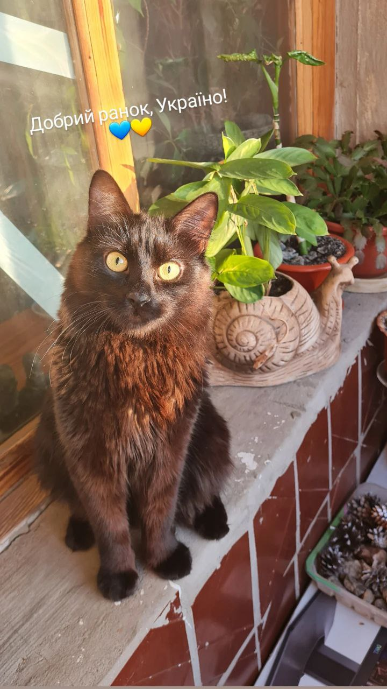

Моє пухнасте щастя
Я вважаю, що тварини – це наші друзі. Арчику вже 2 роки. Ми
всією сім’єю його дуже любимо. Він дуже жвавий кіт, ми не можемо за ним
встежити.
Виріс він красивим та пухнастим котом. Колір шерсті у Арчика чорного
кольору, але з відтінками червоного та коричневого кольорів, очі
жовті.
Я доглядаю за ним: годую його, граю з ним.Я дуже люблю свого жовтоокого
кота – він частина моєї родини.
